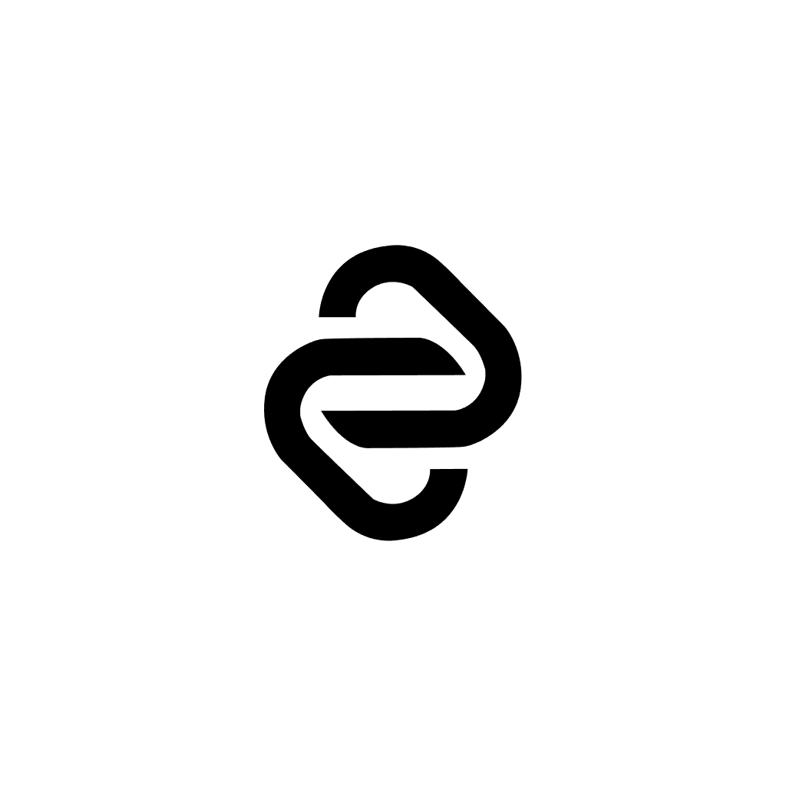
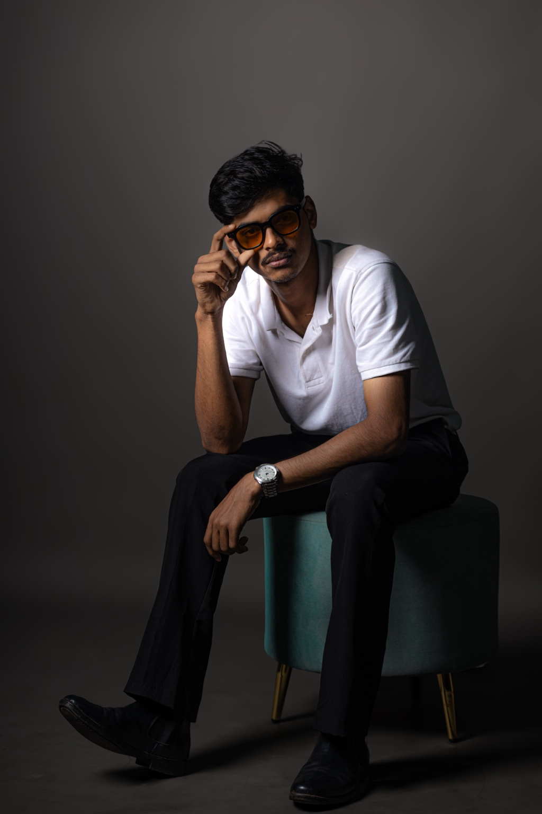
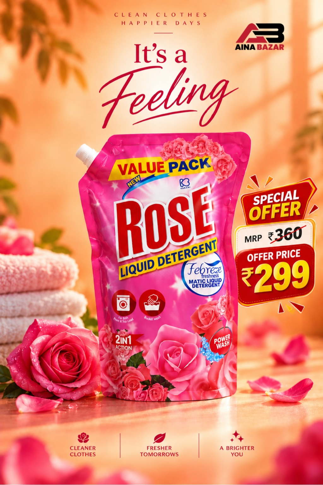
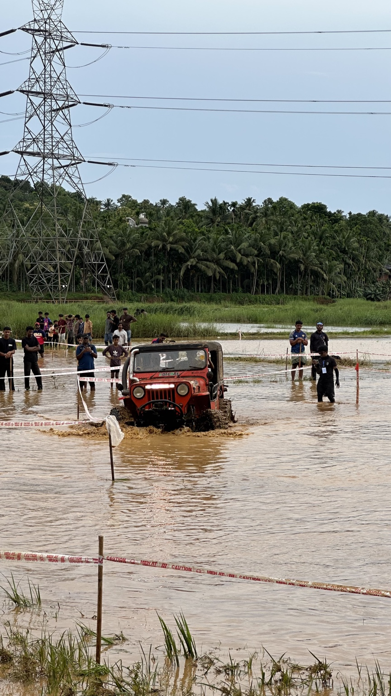
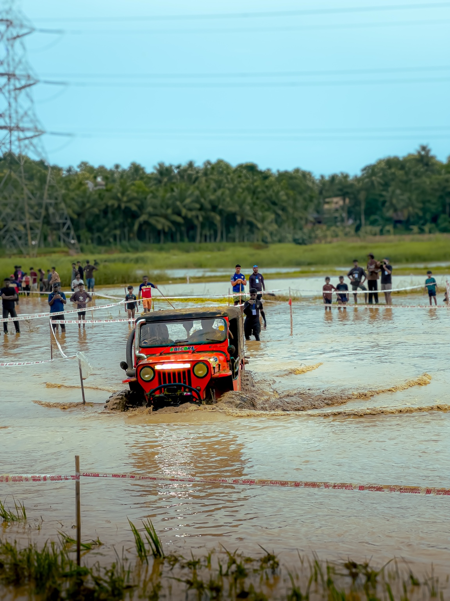
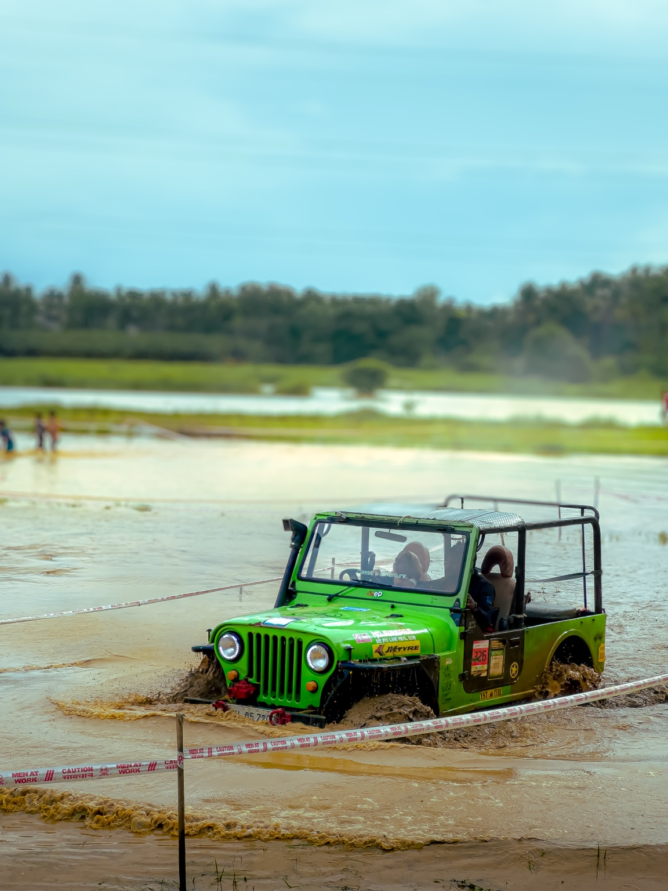
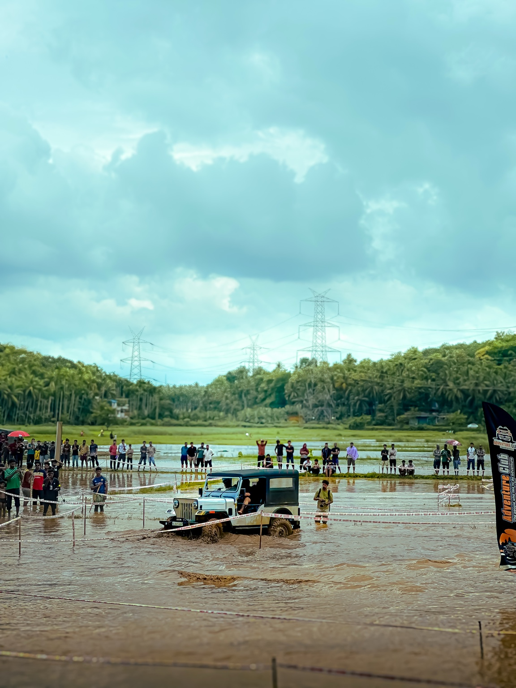
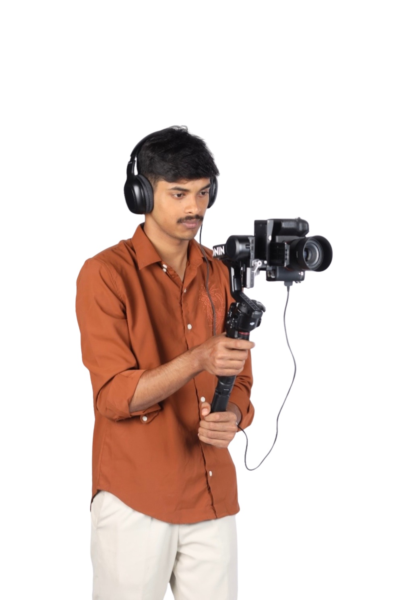

Video Editing
Story-driven edits, pacing, sound design and cinematic colour grading.

WASEEM. Let's Talk ↗VIDEO EDITOR · VIDEOGRAPHER · CREATIVE
I’m Waseem Najad — a video editor, editing mentor and videographer creating cinematic stories through rhythm, colour and visual design.

WHAT I DO
Story-driven edits, pacing, sound design and cinematic colour grading.
Cinematic shooting, lighting and visual composition for digital content.
Emotional, elegant wedding visuals built around real moments.
Posters, promotional creatives and visual identities for brands.
Retouching, compositing and creative image enhancement.
3D and VFX experimentation for cinematic visual concepts.
SELECTED WORK
VIDEO EDITING / CINEMATIC
A festive cinematic edit combining food, portraits, traditional details and energetic celebration moments.
View more on Behance ↗GRAPHIC DESIGN

PHOTO EDITING







VIDEOGRAPHY / BTS
From camera setup to final grade, I enjoy building the visual language of a project from the first frame.
Wedding & film work ↗CGI / VFX
A personal CGI/VFX showcase created as part of my visual experimentation.
ABOUT ME
I’m Waseem Najad, a video editor, video editing mentor and videographer with around a year of hands-on experience in editing, shooting and visual storytelling. I love experimenting with cinematic shooting, colour grading and fresh editing styles.
Alongside video, I work across graphic design, poster creation, photo editing and CGI/VFX. I’m always looking for a new visual problem to solve and a new way to make an image feel different.
TOOLS I WORK WITH
LET'S CREATE